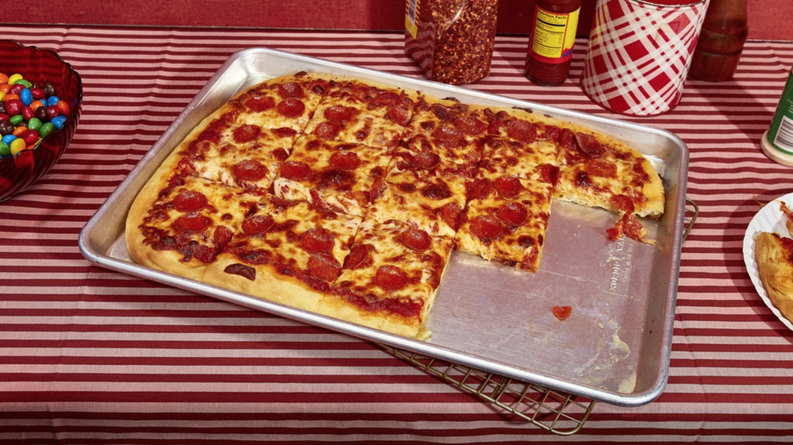

Sheet Pan Pizza Recipe

For the talk
Pan pizza is a pizza baked in a deep dish pan. The bottoms and sides of the crust become fried and crispy in the oil used to coat the pan. Chicago and Detroit-style pizza may be considered a form of pan pizza. Pan pizza generally refers to the thick style popularized by Pizza Hut in the 1960s.
Dan and Frank Carney opened a pizza parlor in Wichita, Kansas which would later become Pizza Hut. At first, the brothers focused on a thin crust pizza which included cheese, pepperoni, and/or sausage. The pizza parlor franchised into Pizza Hut in 1959 and added a thicker crust pan pizza.
Ingredients
- 514 grams all-purpose flour, plus more for dusting
- 11 grams kosher salt
- 3 grams quick rise yeast
- 125 ml olive oil, divided
- 350 ml warm water
- 250 ml tomato sauce
- 313 grams shredded mozzarella cheese
- 60 grams sliced pepperoni
Steps
- Make the dough: Mix the flour, salt, and yeast in a large bowl. Stir in 3 tablespoons olive oil, then add in the water and mix until a shaggy dough forms. Knead dough on a lightly floured surface until a smooth ball forms.
- Pour the remaining oil on a baking sheet. Place the dough in the centre of the baking sheet and rub with a little bit of oil. Cover with plastic wrap and place in a warm spot until the dough has doubled in size, about 1 hour.
- Heat the oven to 450°F. Use your fingertips to gently stretch the dough to fill the length and width of the pan.
- Spoon tomato sauce on the dough leaving a 1-inch border around the edges. Sprinkle cheese over sauce then arrange pepperoni on top. Bake in the oven until the cheese is bubbling, about 20 minutes. Let cool for 5 minutes before slicing.